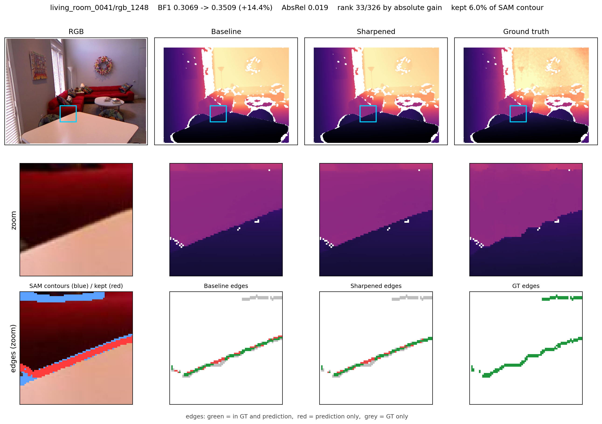

Selective Boundary Refinement for Diffusion-Based Monocular Depth
Diffusion-based monocular depth estimators produce accurate surfaces but blurred depth discontinuities. A natural remedy is to sharpen the predicted depth at contours found by a segmentation model, yet applying a barrier-sharpening operation at every contour lowers boundary BF1 by 1.90% on NYUv2. We show by measurement that the bottleneck is not where the contours are — a true depth step is a median 1.00 px from the nearest contour — but which contours to use: 79.8% of them lie where no depth step exists. Keeping only the correct 4% with ground truth, without moving a single contour, turns −1.90% into +43.39%. We therefore fix the repair operation and learn only where to apply it. A 1.9M-parameter selector trained for 16 minutes on 795 frames raises BF1 by 11.92 ± 0.90% on NYUv2 over four seeds, and transfers with no retraining to a second depth model of a different architecture and output representation, raising its BF1 by 27.83 ± 1.27%. Five training-free controls, measured on each model's own predictions, place the learning's contribution at 10.7 and 17.4 points. The selector and the repair add 30 ms per frame, and a coarse segmentation grid delivers 95% of the gain at 20% of the segmentation cost. We also report a negative result: the selector transfers across depth models but not across datasets, and four remedies failed to fix it.
Monocular depth estimators built on pre-trained diffusion models [1,2,3] reach strong pixel-wise accuracy, but they inherit the smoothness of the generative prior at object boundaries. A depth map can have excellent AbsRel while every occlusion boundary in it is spread over several pixels. Pixel-averaged metrics do not see this: the boundary pixels are a small fraction of the image, so a metric dominated by flat surfaces reports no problem. Boundary-specific metrics do [4].
Fixing boundaries after the fact is attractive because it leaves the depth model untouched. Prior work learns how to move the depth [5,6,7]. We take the opposite decomposition: fix the repair, and learn where it should act.
The reason is empirical. Section 3 measures a barrier-sharpening operation applied at every contour a segmentation model [8] draws, and finds it costs 1.90% of boundary BF1. The same measurement shows why: contour localisation is already good enough, while 79.8% of the contours mark no depth step at all, and sharpening there only flattens smooth surface. Selecting the correct contours with ground truth, with no change to their positions, moves the effect from −1.90% to +43.39%. Selection, not localisation, is the binding constraint.
Our contributions:
We also report, in Sec. 7, that the selector does not transfer across datasets, and that four attempts to fix that failed.

Marigold [1] repurposes Stable Diffusion for affine-invariant monocular depth by fine-tuning on synthetic RGB-D. Lotus [2] removes the diffusion schedule, predicting in a single step with the timestep pinned. Subsequent work showed that one-step fine-tuning both simplifies and accelerates these models by orders of magnitude [9]. We evaluate on two such models that are as far apart as the family allows: a 21.3B diffusion-transformer model emitting affine-invariant log depth, and an 868M UNet model emitting disparity.
Ramamonjisoa et al. [5] is the closest prior work: it learns a 2D displacement field that re-samples pixels around occlusion boundaries, is applicable to any depth estimator's output, and uses NYUv2 with the same 795 training and 654 test frames we use. SharpNet [6] instead builds occluding-contour recovery into the depth network's own training. Edge-guided post-processing [7] preserves boundaries during disparity synthesis in self-supervised pipelines. More recently, depth refinement through neural radiance fields [10] reports a 2.9% relative improvement in edge F1. All of these learn how to move depth. None, to our knowledge, fixes the repair and learns only its target, and none uses a promptable segmentation model as the source of candidate boundaries.
We adopt the scale-invariant boundary BF1 of Depth Pro [4], which declares a depth step between neighbouring pixels when their depth ratio exceeds a threshold, and sweeps that threshold. We propose no new metric. Neither Lotus nor the diffusion-transformer model we use reports BF1 on NYUv2, so we measure the baselines ourselves.
Segment Anything [8] has been used to refine masks with depth as a prior; we use it in the opposite direction, as a source of candidate depth boundaries that a learned selector then filters.
Let d be a predicted depth map and C a set of contour pixels. The barrier-sharpening operation discards a band of ±2 px around C, floods the region labels from outside the band inward so that the two sides of a contour meet inside it rather than one leaking across, and refills each discarded pixel with the local mean of its own side within a radius of 3 px. The band is discarded because a diffusion model interpolates across the boundary; refilling from one side only removes that mixing. The operation has two settings and learns nothing. The refill radius must exceed the band, or there is nothing to refill from and the operation is a silent no-op.
Table 1 applies the operation at every contour that Segment Anything draws on NYUv2, using a 21.3B diffusion-transformer depth model as the base. Boundary BF1 falls by 1.90%.
| Contours sharpened | kept | raw BF1 |
|---|---|---|
| all segmentation contours | 100% | −1.90% |
| oracle: only the true ones | 4% | +43.39% |
Measuring from each true depth discontinuity to the nearest contour gives a median of 1.00 px, with 76.9% within 2 px. The contours are where the boundaries are. The failure is in the other direction: 79.8% of the contour pixels sit where no depth step exists — wallpaper patterns, floor seams, poster edges. Sharpening there discards a band of smooth surface and refills it from two sides that agree, which can only add noise.
Keeping only the 4% of contour pixels that lie within 1 px of a true discontinuity, and leaving every kept contour exactly where it is, moves the raw effect from −1.90% to +43.39% (Table 1). No contour moves; only the set changes. This isolates selection as the binding constraint and sets the target for a learned selector.
Inputs and output. The selector is a four-level U-Net with 1,928,993 parameters. It takes the RGB image (3 channels), the predicted depth (1), and the contour mask (1), and emits one logit per pixel. The prediction is standardised per image: these models are affine-invariant, so the absolute level and scale carry no information, and a mismatch between training and inference here is silent. For a model that emits disparity rather than log depth we apply −log d first, since disparity rises as depth falls and feeding it raw would invert the signal.
Retention. We keep the top 6% of contour pixels per image rather than thresholding the probability. A fixed threshold keeps a different amount depending on how many contours a scene happens to contain, so the budget the repair spends would drift from frame to frame.
Loss and training. Binary cross-entropy masked to contour pixels; the 88% of the image that carries no contour is not a question the selector is asked. A contour pixel is positive if it lies within 1 px of a depth discontinuity in ground truth. Ground truth is used only to generate these labels and never appears in the inference path. Training uses the 795 NYUv2 training frames with a scene-disjoint validation split, takes 16 minutes and 3.5 GB of VRAM on one RTX 4090, and never touches the 654-frame test set.
We evaluate on the 654-frame NYUv2 [11] test split, scene-disjoint from the training frames. The metric is the scale-invariant boundary BF1 of Depth Pro [4], swept over 11 thresholds from 5% to 25%. We report the raw relative change in BF1 against each base model's own unsharpened prediction. Predictions are aligned to ground truth in their own space before scoring — log depth for one model, disparity for the other — and the alignment affects every variant equally.
Table 2 gives the result on two depth models that share no architecture, no parameter scale and no output representation. One selector is trained, on the first model's predictions; it is applied to the second with no retraining, adding only the disparity-to-log-depth conversion.
| Base depth model | BF1 | no selection | + selector |
|---|---|---|---|
| DiT, 21.3B, log depth | 0.0884 | −1.90% | +11.92 ± 0.90% |
| UNet, 868M, disparity | 0.0693 | +10.31% | +27.83 ± 1.27% |
All four seeds clear +10% on the first model, with a 95% confidence interval whose lower bound is +10.49%. Pixel-wise accuracy does not regress: AbsRel moves from 0.03881 to 0.03860 and δ1 from 0.97969 to 0.98000. Both changes are small, and we claim only that accuracy is not traded for boundaries.
Per-frame scoring shows the mean is not carried by a few frames: 493 of 651 scorable frames improve (75.7%), with a median relative gain of +14.13% and quartiles +0.32% and +34.38%. Figure 1 shows a frame near the middle of that distribution.
An improvement visible in one metric may be an improvement in that metric's definition. We therefore also report Soft Edge Error, the boundary metric our primary base model's own authors use, transcribed from their implementation. SEEk averages, over ground-truth boundary pixels, the smallest absolute error between the prediction and any ground-truth depth in a k×k neighbourhood; it forgives a displaced boundary and punishes a blurred one. Unlike BF1 it is an absolute error in depth units, so it is not scale-invariant and the prediction must be aligned first. Lower is better.
| BF1 | SEE3 | SEE5 | SEE7 | |
|---|---|---|---|---|
| DiT, 21.3B | ||||
| baseline | 0.0884 | 0.1148 | 0.0882 | 0.0758 |
| + selector | +12.49% | −3.34% | −2.89% | −2.39% |
| relocated | −0.50% | +0.32% | +0.46% | +0.52% |
| oracle | +209.8% | −11.44% | −5.09% | −2.91% |
| UNet, 868M | ||||
| baseline | 0.0693 | 0.1403 | 0.1147 | 0.1014 |
| + selector | +28.18% | −5.18% | −5.54% | −5.48% |
| relocated | −0.57% | +0.20% | +0.23% | +0.24% |
| oracle | +279.0% | −12.96% | −9.81% | −8.73% |
The two metrics agree on every variant of both models: the selector improves both, the relocated control worsens both, and the oracle is best on both. The improvement is therefore not an artefact of BF1's definition.
Their magnitudes are not comparable and should not be read as such. SEE is an absolute error averaged over boundary pixels, floored by how accurate the model's depth values are there, so even the oracle — which raises BF1 by 209.8% — lowers SEE5 by 5.09%. The improvement also shrinks as k grows (−11.44% to −2.91% for the oracle), which is what a metric that forgives more displacement at larger k should do.
The gain could come from the sharpening rather than from the learning, or from simply being sparse. Table 4 measures five training-free alternatives, each on the base model's own predictions.
| Selection | DiT 21.3B | UNet 868M |
|---|---|---|
| none (all contours) | −1.90% | +10.31% |
| relocated (same sparsity) | −0.50% | −0.57% |
| random pixels (same rate) | −20.35% | −19.70% |
| random blocks (same rate) | −1.48% | −0.67% |
| best hand-crafted threshold | +1.25% | +10.46% |
| trained selector | +11.92% | +27.83% |
| learning contributes | 10.7 pt | 17.4 pt |
The hand-crafted control thresholds a local descriptor of the predicted depth's log-gradient. We select its feature by the final metric rather than by ranking quality: over four candidates the AUC ordering and the BF1 ordering are inverted, and the feature with the worst AUC (0.801) gives the best BF1 (+1.25%) while the best AUC (0.876) gives the worst (−2.59%). A control chosen by a proxy metric would have been too weak, and a weak control only flatters the method compared against it.
Random-pixel selection scores almost identically on both models (−20.35% and −19.70%), as it should: that control measures a property of the repair operation, not of the depth model.
Removing the segmentation model entirely, so that the selector must find boundaries itself from RGB and depth and every valid pixel is a candidate, gives +7.30% instead of +11.92%. The segmentation is therefore worth 5.19 points, 42% of the gain. The mechanism is recall, not precision: on segmentation contours the true steps number 1,221 pixels per frame and the budget of 1,207 can cover 98.9% of them, whereas counting over the whole image there are 3,042 and the same budget caps recall at 39.7%. The segmentation earns its contribution by shrinking the target set.
Table 5 gives wall-clock time per frame on one RTX 4090, measured after warm-up on real frames.
| Configuration | ms/frame | raw BF1 | ms per point |
|---|---|---|---|
| depth model only | 495 | — | — |
| + selector, no seg. | 525 | +7.30% | 72 |
| + selector, grid 16 | 1,059 | +11.32% | 94 |
| + selector, grid 48 | 3,128 | +11.92% | 262 |
The selector costs 12.0 ms and the repair 18.3 ms, so what this work adds is 30.3 ms — 6% of the depth model's own 495 ms. The segmentation dominates everything else, at 534 ms to 2,603 ms depending on its point grid.
A coarse grid suffices. Grid 16 reaches 95% of grid 48's gain for 20% of its cost, making the whole pipeline 3.0× faster and 2.8× cheaper per point of BF1. Precision runs the other way across the grids (51.6%, 50.6%, 50.2% at grids 16, 32, 48), which says what the coarse grid is doing: it traces large objects and misses wallpaper patterns and floor seams, so the candidate set it produces is already cleaner. Grid 48 finds 3,200 more contour pixels per frame than grid 16 and BF1 barely moves, so most of those are false positives. This is the same mechanism as the ablation above — the segmentation helps by shrinking the target set — appearing along a different axis.
Two datasets, because a boundary metric needs dense ground truth. The base models we post-process are evaluated on five benchmarks: NYUv2, KITTI, ScanNet, ETH3D and DIODE. BF1 compares neighbouring pixels' depth ratio, so it needs ground truth dense enough for both to exist, and on three of the five it is not. KITTI's LiDAR leaves 13.2% of adjacent pairs with both pixels valid; ETH3D, which projects a laser point cloud onto 24-megapixel DSLR frames, leaves 4.1%. DIODE is dense (99.7% indoors), but its standard evaluation protocol masks out pixels whose depth gradient exceeds a threshold, because its laser ground truth is unreliable at edges — and that filter removes 99.4% of the depth discontinuities indoors and 100% outdoors, which is precisely what this method operates on. Of the five, BF1 is well defined on NYUv2 and ScanNet, and we evaluate on both.
The selector transfers across depth models but not across datasets. Table 6 applies the NYUv2-trained selector to ScanNet [12] and Hypersim [13], using the same depth model.
| Evaluation data | no selection | + selector | precision |
|---|---|---|---|
| NYUv2 (in-domain) | −1.90% | +11.92% | 50.2% |
| ScanNet | +3.26% | +2.81% | 17.4% |
| Hypersim | +2.28% | −4.64% | 55.8% |
On both held-out datasets the selector fails to beat using every contour. We tried four remedies and all four failed: dropping the RGB channels (which made transfer worse, not better), training on the other dataset instead, sweeping the retention from 2% to 20% (no setting on ScanNet reaches the no-selection result), and training on an equal mixture of both (which damages the in-domain result without helping transfer). Increasing the training set from 795 to 1,590 frames made the in-domain result worse, so data volume is not the binding constraint either.
We report this because it bears on a claim the prior work in this area makes. Post-processing that is model-agnostic is not thereby dataset-agnostic, and the two kinds of generalisation evidently come apart.
Headroom. The oracle of Sec. 3 reaches +43.39% against our +11.92%, so 71% of what selection could deliver is unrecovered. The gap is precision: 50.2% against the oracle's 100%.
Metric scope. The improvement is in boundary metrics. AbsRel and δ1 move by amounts too small to claim as improvements, and we claim only that they do not regress.
Label and metric share a definition. Supervision is "within 1 px of a ground-truth depth step" and BF1 scores agreement with ground-truth depth steps. Ground truth never enters inference and the test scenes are disjoint from training, but the correspondence should be read with that in mind.
Post-hoc boundary sharpening for monocular depth fails not because contours are badly localised but because most of them mark no depth step. Fixing the repair and learning only its target makes the gain attributable, costs 30 ms per frame and 1.9M parameters, and transfers across depth models without retraining. It does not transfer across datasets, and we were unable to make it do so.
Reading copy, printed from HTML. main.tex is the submission
source; this file mirrors it and both must be changed together.